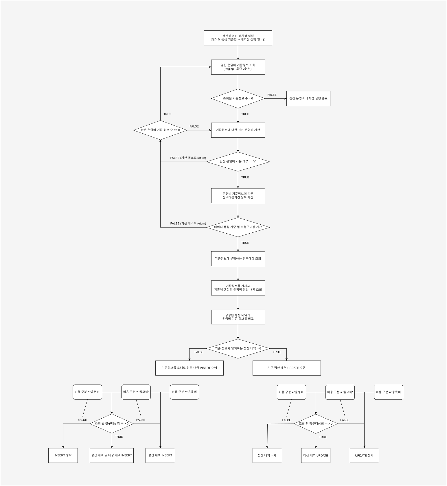
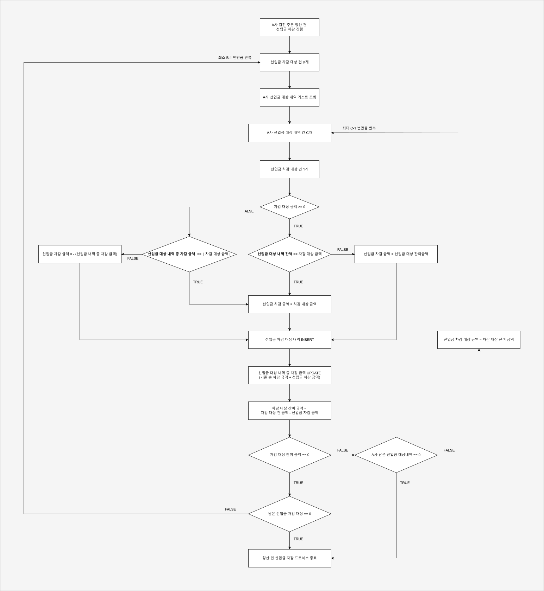

첫 프로젝트에서 맡은 건강검진 운영비 정산 배치와 선입금 차감 로직
2023년 11월 입사 후 처음 배정받은 프로젝트입니다. 처음에는 고객사 건강검진 대행 운영비를 정산하는 화면의 조회·수정 기능만 맡았습니다. 기존 개발자가 PM으로 옮기면서 운영비 정산 배치를 이어받았고, 중간에 검진비 선입금 차감 로직까지 개발했습니다.
- 만든 것
- 운영비 정산 배치: 고객사별 운영비 기준(청구 주기, 금액, 청구 단위 등)을 읽어 이번 달 청구 대상인지 판단하고, 이미 만든 정산 내역과 비교해 새로 만들거나 고칩니다.
- 선입금 차감: 고객사가 미리 낸 검진비에서 정산 건마다 금액을 차감합니다. 한 선입금의 잔액이 모자라면 다음 선입금으로 넘어가 남은 금액을 마저 차감합니다.
- 검증
- 금액을 다루는 로직이라, 두 로직 모두 플로우 차트를 먼저 그려 PM에게 검증받은 뒤 개발했습니다.
- 배치는 청구 주기, 청구 단위, 금액 단위 같은 기준을 하나씩 바꿔 가며 엑셀로 테스트 케이스를 만들고, 예상 결과와 실제 결과를 하나하나 대조했습니다. 이 과정에서 기준과 기존 정산 내역을 비교하는 로직의 오류를 찾아 고쳤습니다.
- 로컬에서는 IntelliJ 디버거로 단계마다 값을 직접 확인했습니다.
- 결과
- 오픈 후 정산 오류가 거의 없었습니다.

